TissueBank · De la solicitud médica al despacho, con trazabilidad completa
Ana Sofia Grajales Grajales · Tomás Lopera Duque
Ingeniería Biomédica · Ingeniería de Sistemas y Computación · Envigado, 2026
El médico envía la solicitud de tejido a mano.
El equipo de la empresa captura la información.
Edison anota cada implante: código de donante, tipo, medidas en mm y estado.
Los matches se comunican por chat al médico.
Ningún criterio define qué paciente se atiende primero.
La vida útil del tejido va de días a semanas y nadie la vigila.
No queda registro de quién decidió qué, ni cuándo.
Sin tolerancias documentadas entre lo pedido y lo disponible.
El cuaderno no tiene respaldo digital.
El motor compara cada solicitud con los implantes disponibles y propone hasta tres candidatos con un score de compatibilidad.
Un código de orden único por solicitud acompaña el match, la asignación y el despacho.
Correo electrónico y portal web reemplazan al WhatsApp como canal con el médico.
En cualquier momento se audita qué médico pidió el tejido, de qué donante viene, qué se decidió y cuándo se entregó.
Un recorrido completo sobre infraestructura real: datos en Supabase y un correo verdadero enviado al doctor.
Roles: Doctor y Admin.
Python 3.12 detrás de API Gateway.
PostgreSQL en Supabase con integridad referencial.
Para dos roles: Doctor y Admin.
Autenticación con tokens JWT.
Correo real al doctor con Resend · API REST · Frontend estático en Netlify.
al mes. Todos los servicios operan dentro de su capa gratuita.
S3 + CloudFront, EventBridge y Amazon SES.
Urgente, alta, media o normal según el tipo de caso.
Escaneo en cada punto de la cadena de custodia.
Identificar pacientes afectados por un lote de donante contaminado.
Tasa de matching, tiempo de asignación y rechazo por médico.
A Isabel Cristina Jiménez y Edison Duque, por abrirnos el proceso real de TissueBank, y a Mario Alejandro Giraldo Vásquez, por su acompañamiento.
Sistema: amazing-kataifi-34822a.netlify.app
Código: github.com/Tomaslopera/tissue_bank
Ana Sofia Grajales Grajales · Tomás Lopera Duque · Universidad EIA · 2026